負面效果遺物詞條
- 本頁依遊戲內遺物篩選的「負面效果」大類分章，列出深層遺物可能附帶的全部負面效果；分類名稱為本站暫譯。
- 詞條名稱取自遊戲的繁體中文與英文文字；「效果數值與規則」欄的說明譯自 Round Table Codex 遺物資料集的社群詳細說明，數字照原文保留；與遊戲參數（版本 1.03.5）不符的說明改依參數撰寫。原文沒有說明的詞條，遊戲參數能以明確的引用關係給出數值時依參數撰寫說明，其餘能取得數值者直接列出數值，否則標示「未載明數值」。「種類」欄列出詞條出現在哪種遺物：一般、深層，或固定遺物的名稱；分級詞條出現在兩種遺物時，每一行都列出該種遺物的等級。「效果數值與規則」欄最後的「相關能力值」連到能力值頁，依遊戲參數列出詞條改變的能力值，包含提升、降低與條件生效；沒有列出不表示沒有關係。
負面效果（能力值）
| 詞條 | 效果數值與規則 | 種類 |
|---|---|---|
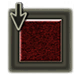 降低生命力、感應Reduced Vigor and Arcane | 生命力 -3，感應 -3。可疊加；多份合成方式尚未核實相關能力值： 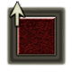 生命力、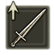 感應 | 深層 |
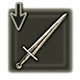 降低力氣、智力Reduced Strength and Intelligence | 力氣 -3，智力 -3。可疊加；多份合成方式尚未核實相關能力值：力氣、 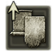 智力 | 深層 |
| 降低靈巧、信仰Reduced Dexterity and Faith | 靈巧 -3，信仰 -3。可疊加；多份合成方式尚未核實相關能力值：靈巧、信仰 | 深層 |
| 降低智力、靈巧Reduced Intelligence and Dexterity | 智力 -3，靈巧 -3。可疊加；多份合成方式尚未核實相關能力值：靈巧、智力 | 深層 |
| 降低信仰、力氣Reduced Faith and Strength | 信仰 -3，力氣 -3。可疊加；多份合成方式尚未核實相關能力值：力氣、信仰 | 深層 |
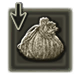 減少獲得的盧恩Reduced Rune Acquisition | 從敵人獲得的盧恩 ×0.9。可疊加；多份合成方式尚未核實 | 深層 |
負面效果（減傷率）
| 詞條 | 效果數值與規則 | 種類 |
|---|---|---|
| 持續減少 HPContinuous HP Loss | 每 1 秒減少 2 HP。是否可疊加尚未核實 | 深層 |
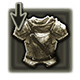 降低對所有異常狀態的抵抗力All Resistances Down | 中毒、猩紅腐敗、出血、凍傷、催眠、發狂、驟死抵抗力 -80。是否可疊加尚未核實相關能力值： | 深層 |
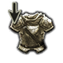 使用聖杯瓶時，降低減傷率Reduced Damage Negation for Flask Usages | 使用聖杯瓶時，受到的所有來源傷害 ×1.45。是否可疊加尚未核實相關能力值： | 深層 |
| 閃避後的當下，降低減傷率Reduced Damage Negation After Evading | 閃避後的當下，受到的所有來源傷害 ×1.45。是否可疊加尚未核實相關能力值： | 深層 |
| 連續閃避時，降低減傷率Repeated Evasions Lower Damage Negation | 連續閃避時，受到的所有來源傷害 ×1.35，持續 15 秒。是否可疊加尚未核實相關能力值： | 深層 |
| 受到損傷時，會累積中毒量表Taking Damage Causes Poison Buildup | 受到攻擊時，中毒量表累積 52。（此類效果中的「受到攻擊」，定義為造成傷害且未被防禦的攻擊）可疊加；多份合成方式尚未核實 | 深層 |
| 受到損傷時，會累積猩紅腐敗量表Taking Damage Causes Rot Buildup | 受到攻擊時，猩紅腐敗量表累積 44。可疊加；多份合成方式尚未核實 | 深層 |
| 受到損傷時，會累積出血量表Taking Damage Causes Blood Loss Buildup | 受到攻擊時，出血量表累積 44。可疊加；多份合成方式尚未核實 | 深層 |
| 受到損傷時，會累積凍傷量表Taking Damage Causes Frost Buildup | 受到攻擊時，凍傷量表累積 44。可疊加；多份合成方式尚未核實相關能力值： | 深層 |
| 受到損傷時，會累積催眠量表Taking Damage Causes Sleep Buildup | 受到攻擊時，催眠量表累積 40。可疊加；多份合成方式尚未核實 | 深層 |
| 受到損傷時，會累積發狂量表Taking Damage Causes Madness Buildup | 受到攻擊時，發狂量表累積 40。可疊加；多份合成方式尚未核實 | 深層 |
| 受到損傷時，會累積死亡量表Taking Damage Causes Death Buildup | 受到攻擊時，死亡量表累積 32。可疊加；多份合成方式尚未核實 | 深層 |
負面效果（動作）
| 詞條 | 效果數值與規則 | 種類 |
|---|---|---|
| 降低聖杯瓶恢復量Reduced Flask HP Restoration | 聖杯瓶的 HP 恢復量 ×0.85。可疊加；多份合成方式尚未核實 | 深層 |
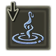 降低絕活量表累積Ultimate Art Charging Impaired | 自然累積的絕活量表累積量 ×0.85，攻擊獲得的絕活量表累積量 ×0.85。可疊加；多份合成方式尚未核實 | 深層 |
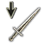 HP 沒有全滿時，降低攻擊力Lower Attack When Below Max HP | HP 低於 [HP 上限 ×0.8499] 時，所有來源的傷害 ×0.915。是否可疊加尚未核實相關能力值：攻擊力 | 深層 |
| HP 沒有全滿時，累積中毒量表Poison Buildup When Below Max HP | HP 低於 [HP 上限 ×0.8499] 時，每 0.22 秒中毒量表累積 2。是否可疊加尚未核實 | 深層 |
| HP 沒有全滿時，累積猩紅腐敗量表Rot Buildup When Below Max HP | HP 低於 [HP 上限 ×0.8499] 時，每 0.24 秒猩紅腐敗量表累積 2。是否可疊加尚未核實 | 深層 |
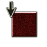 瀕死時，降低 HP 上限Near Death Reduces Max HP | 瀕死時，HP 上限 ×0.75，持續 60 秒。是否可疊加尚未核實相關能力值：HP 上限 | 深層 |
查證限制
- 詞條的詳細說明是社群整理的英文說明譯文，不是遊戲內文字，也未逐條實測。原文的待核實註記譯為「（原文註記：……）」；原文與詞條名稱矛盾處照譯並標「（原文如此）」。原文數值、物品或地點與遊戲參數不符時（例如改版後社群資料未更新的數值），改依參數重寫該條說明，不保留原文數字。
- 「可疊加」只表示同一詞條可在多個遺物上同時生效；多份如何合成（相加或相乘）尚未核實。
- 沒有與遊戲相同框線之授權圖片的圖示留空，不以其他圖片替代。
- 遊戲參數為 1.03.5 原版快照；遊戲文字與社群資料集各有擷取版本，詳見首頁的資料來源。版本更新後須重新核對。